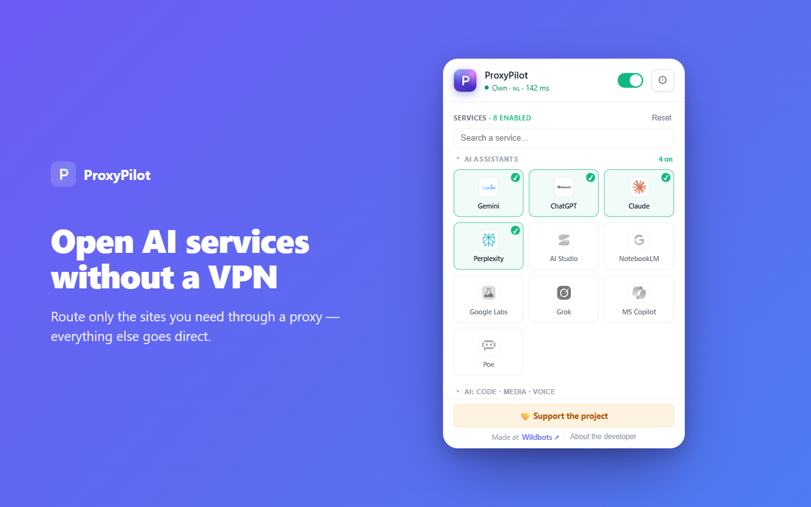
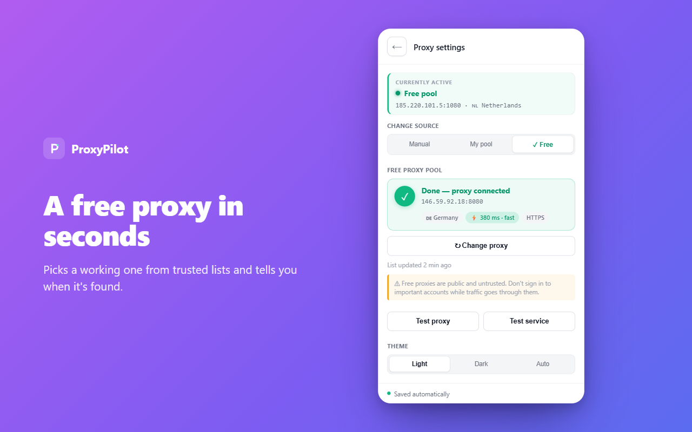

Per-domain routing
Only the services you switch on go through the proxy. Implemented via a PAC script (Chromium) or proxy.onRequest (Firefox).
ProxyPilot routes only the services you pick through a proxy — Gemini, Claude, ChatGPT and 40+ more. Everything else stays direct. No VPN, no signup.
Free & open source · MIT · No account · No tracking


A VPN sends everything through one tunnel — slower, and your bank suddenly thinks you're in another country. ProxyPilot only touches the domains you enable.
Only the services you switch on go through the proxy. Implemented via a PAC script (Chromium) or proxy.onRequest (Firefox).
Your bank, your email, your local sites — untouched and full speed. Nothing else is tunneled or slowed down.
Runs entirely locally. No signup, no telemetry, no analytics. Settings live in your browser and never leave your device.
Bring your own proxy, your own pool, or let ProxyPilot find a working free one for you.
Pick the services that route through a proxy; the rest connects directly. Add your own custom domains too.
Gemini, ChatGPT, Claude, Perplexity, Grok and more — enable any of them in one click.
Your own proxy, your own pool with auto-rotation, or a curated free public pool.
Finds a fast, working proxy, skips dead ones, and keeps a warm standby for instant switching.
Auto-detects the protocol and handles authentication. Just paste a proxy in almost any format.
A client only — it doesn't run, host, or sell any proxy, and collects nothing about you.

And you can add any custom domain of your own.
The free pool is the fastest way to start: zero config, ProxyPilot finds a live proxy for you. But public free proxies are untrusted by definition — anyone can run one.
Don't sign in to Google, banking, or any important account while routed through a free proxy — that sign-in will likely be flagged. For anything sensitive, bring your own proxy. The extension shows a clear warning banner when the free pool is active with an AI service.
Free, open source, no account. Add it to your browser and pick your services.